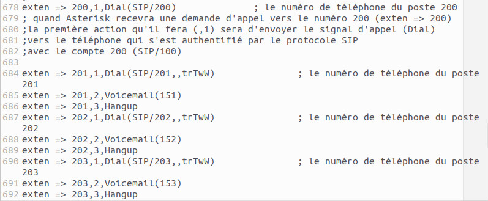
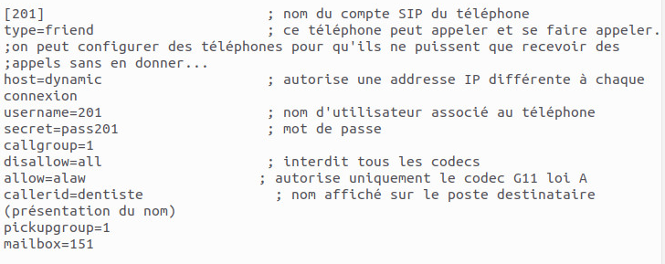
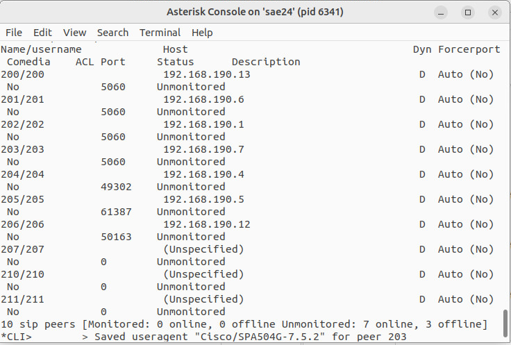
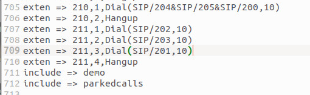
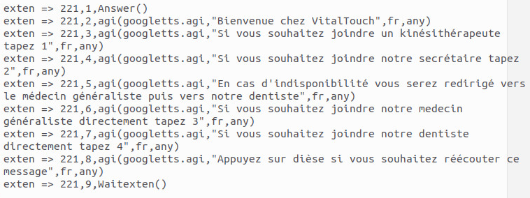
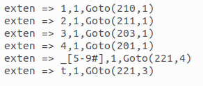

Extensions.conf
Afin de pouvoir réaliser des appels et ainsi qu’une mise en attente ou un t
ransfert d’appel il faut modifier le fichier sur le serveur asterisk intitulé
“extensions.conf” dans lequel on va rajouter autant de numéros avec les
fonctionnalités que de téléphone présent dans le réseau.

SIP.conf
Afin de pouvoir ensuite ajouter un téléphone dans le serveur asterisk avec un
numéro, mdp, codec etc il faut rajouter une configuration de téléphone dans le
fichier SIP.conf dans le serveur asterisk.

SIP SHOW PEERS
Une fois les modifications apportées sur les différents fichiers ainsi que
chaque téléphone et bien configurés il faut redémarrer le serveur afin que
les changements soient bien appliqués puis à l'aide de la commande Sip Show
Peers vous pourrez vérifier que chaque téléphone est bien connecté au serveur asterisk.

Groupement
Afin de réaliser un groupement d’appel il faut créer d'autres numéros en
modifiant les fichier SIP.conf et extensions.conf dans lesquels il faut
préciser que lors d’un appel ,ici des numéros 210 et 211, plusieurs téléphones
doivent sonner ou en même temps ou dans un certain ordre.

IVR
L’IVR va permettre de créer un standard lorsque l’on appelle le numéro 221 ou une voix
va nous indiquer sur quelle chiffre appuyer afin de pouvoir appeler une certaine personne.
La configuration de l’IVR se fait une fois de plus sur les fichiers SIP.conf et extensions.conf .

